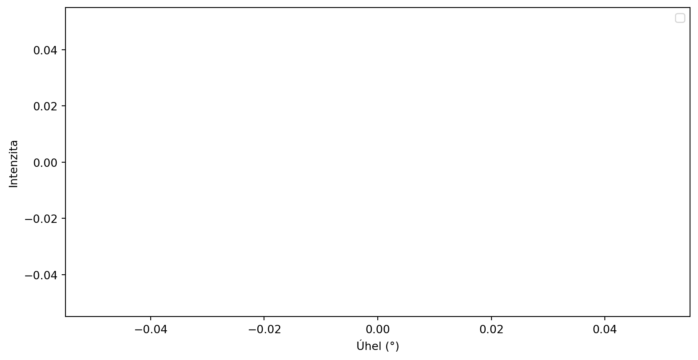

# !python -m pip install iminuit
import numpy as np
import matplotlib.pyplot as plt
from iminuit import Minuit
from iminuit.cost import LeastSquares
# Funkce pro Gaussovu křivku
def gauss(x, A, mu, sigma):
return A * np.exp(-(x - mu) ** 2 / (2 * sigma ** 2))
np.random.seed(42) # Pro opakovatelnost výsledků
angles = np.linspace(-10, 10, 100)
true_sigma = 1.5 # Výsledek
params = [ (100, -3), # A, úhel
(150, 0),
(80, 3) ]Automatizce ve fyzice: Visualizace dat
Petr Čermák
2024-10-24
Cvičení
Připojte se!
cermak.science/teaching/automation/lectures/02-gitlab/

Prázdný quarto logbook
Vytvořte nový soubor (ctrl+shift+p New quarto)
---
title: "Susceptibility measurement"
date: 2024-10-24
author:
- name: Petr Čermák
email: petr.cermak@matfyz.cuni.cz
url: https://cermak.science/
affiliation:
- name: Charles University
city: Prague
state: Czech republic
url: https://kfkl.mff.cuni.cz/
abstract: >
Ukázka měřícího protokolu.
keywords:
- Automation
- Physics
license: "CC 0"
title-block-banner: true
toc: true
number-sections: true
bibliography: references.bib
csl: ../aps.csl
highlight-style: pygments
format:
html:
code-fold: true
code-tools: true
pdf:
geometry:
- top=30mm
- left=30mm
jupyter: python3
---
# My super experiment
## Preparation
We have came to the room, glued the sample and started the measurement.Porovnání knihoven pro fitování: SciPy, lmfit, iminuit
| Knihovna | Hlavní vlastnosti | Výhody | Nevýhody |
|---|---|---|---|
| SciPy | Základcurve_fit |
Jednoduché (?) použití | Nelze snadno přidat omezení parametrů. |
| lmfit | Nadstavba nad SciPy s pokročilým rozhraním pro fitování. | Omezení a pevně dané parametry. | Větší overhead, u nelineárních někdy diverguje. |
| iminuit | Optimalizační knihovna založená na algoritmu Minuit (CERN). Gradientní sestupy, numerické odhady derivací | Rychlé a přesné fitování. Výborné pro nelineární a složité problémy, určije chyby a korelace parametrů. |
- Vyžaduje více konfigurace. - Složitější pro začátečníky. |
iMinuit
iMinuit
# Generování dat a přidání šumu
data = []
for A, mu in params:
intensity = gauss(angles, A, mu, true_sigma) + np.random.normal(0, 5, angles.size)
data.append(intensity)
# Vizualizace generovaných dat
for intensity, (A, mu) in zip(data, params):
plt.plot() #???)
plt.xlabel('Úhel (°)')
plt.ylabel('Intenzita')
plt.legend()
plt.show()
iMinuit
# Least squares cost function pro jednotlivé sady dat
def cost_func(A1, mu1, A2, mu2, A3, mu3, sigma):
# Každá sada dat je hodnocena zvlášť, ale sdílí stejnou sigma
chi2_1 = LeastSquares(angles, data[0], np.ones_like(data[0]) * 5, gauss)(A1, mu1, sigma)
chi2_2 = LeastSquares(angles, data[1], np.ones_like(data[1]) * 5, gauss)(A2, mu2, sigma)
chi2_3 = LeastSquares(angles, data[2], np.ones_like(data[2]) * 5, gauss)(A3, mu3, sigma)
return chi2_1 + chi2_2 + chi2_3 # Součet všech chi^2
# Inicializace Minuit s počátečními odhady parametrů
m = Minuit(cost_func, A1=100, mu1=-3, A2=150, mu2=0, A3=80, mu3=3, sigma=1)
# Fitování
m.migrad()
# Výstup výsledků
print(m.values)
print(f"Fitovaná poloviční šířka (sigma): {m.values['sigma']}")<ValueView A1=97.81956046158962 mu1=-3.0019066325926755 A2=149.8060320971459 mu2=0.018103000048898255 A3=78.1085963835439 mu3=3.003145548463833 sigma=1.5057810077888512>
Fitovaná poloviční šířka (sigma): 1.5057810077888512iMinuit
Python Data Science
Nainstalujte extension Python Data Science
Obsahuje data wrangler
import pandas as pd
import re
pd.options.plotting.backend = "matplotlib"
header = {}
with open("01.dat", "r") as f:
for line in f:
if r := re.match(r'^INFO,([^,]*),([^,]*)$', line):
header[r[2].strip()] = r[1]
if line.strip() == "[Data]":
break
df = pd.read_csv(f, delimiter=",", index_col="Temperature (K)")
df.head()| Comment | Time Stamp (sec) | Magnetic Field (Oe) | Moment (emu) | M. Std. Err. (emu) | |
|---|---|---|---|---|---|
| Temperature (K) | |||||
| 1.894809 | NaN | 358.894085 | 2000.191002 | 0.000067 | 7.134839e-07 |
| 3.078118 | NaN | 362.511599 | 2000.191002 | 0.000070 | 7.662391e-07 |
| 4.010035 | NaN | 372.406449 | 2000.191002 | 0.000068 | 5.733090e-07 |
| 5.069258 | NaN | 372.630530 | 2000.191002 | 0.000070 | 7.033015e-07 |
| 5.995225 | NaN | 376.526731 | 2000.191002 | 0.000069 | 7.084128e-07 |
Pandas
Prvních 5 řádků:
Comment Time Stamp (sec) Magnetic Field (Oe) Moment (emu) \
Temperature (K)
1.894809 NaN 358.894085 2000.191002 0.000067
3.078118 NaN 362.511599 2000.191002 0.000070
4.010035 NaN 372.406449 2000.191002 0.000068
5.069258 NaN 372.630530 2000.191002 0.000070
5.995225 NaN 376.526731 2000.191002 0.000069
M. Std. Err. (emu)
Temperature (K)
1.894809 7.134839e-07
3.078118 7.662391e-07
4.010035 5.733090e-07
5.069258 7.033015e-07
5.995225 7.084128e-07
Základní statistiky:
Time Stamp (sec) Magnetic Field (Oe) Moment (emu) M. Std. Err. (emu)
count 300.000000 300.000000 300.000000 3.000000e+02
mean 1104.659126 2000.191002 0.000052 5.020059e-07
std 426.730677 0.000000 0.000012 1.246511e-07
min 358.894085 2000.191002 0.000032 2.790489e-07
25% 747.380907 2000.191002 0.000041 3.994841e-07
50% 1093.057337 2000.191002 0.000050 4.926898e-07
75% 1481.394855 2000.191002 0.000064 5.988325e-07
max 1828.118167 2000.191002 0.000073 7.987605e-07
Informace o datech:
<class 'pandas.core.frame.DataFrame'>
Index: 300 entries, 1.8948093429447053 to 301.094156836479
Data columns (total 5 columns):
# Column Non-Null Count Dtype
--- ------ -------------- -----
0 Comment 25 non-null object
1 Time Stamp (sec) 300 non-null float64
2 Magnetic Field (Oe) 300 non-null float64
3 Moment (emu) 300 non-null float64
4 M. Std. Err. (emu) 300 non-null float64
dtypes: float64(4), object(1)
memory usage: 14.1+ KB
NonePandas
# Filtrování dat (např. výběr řádků, kde hodnota ve sloupci 'age' je větší než 30)
filtered_df = df[df['Time Stamp (sec)'] > 500]
print("\nFiltrování dle času")
print(filtered_df)
# Vytvoření nového sloupce (např. výpočet BMI na základě sloupců 'weight' a 'height')
df['Xi'] = 0 # #???
print("\nNový sloupec BMI:")
print(df[['Magnetic Field (Oe)', 'Moment (emu)', 'Xi']].head())
Filtrování dle času
Comment \
Temperature (K)
25.928075 NaN
27.034747 NaN
27.987122 NaN
28.978676 NaN
30.051740 NaN
... ...
297.021017 NaN
298.043718 sample offset = 34.54 mm touchdown = 9.3200001...
298.950699 NaN
299.989653 NaN
301.094157 NaN
Time Stamp (sec) Magnetic Field (Oe) Moment (emu) \
Temperature (K)
25.928075 501.914716 2000.191002 0.000071
27.034747 511.185624 2000.191002 0.000072
27.987122 520.558571 2000.191002 0.000070
28.978676 522.824700 2000.191002 0.000071
30.051740 523.900309 2000.191002 0.000072
... ... ... ...
297.021017 1808.808241 2000.191002 0.000034
298.043718 1812.464221 2000.191002 0.000033
298.950699 1815.072137 2000.191002 0.000034
299.989653 1819.358787 2000.191002 0.000032
301.094157 1828.118167 2000.191002 0.000034
M. Std. Err. (emu)
Temperature (K)
25.928075 5.955311e-07
27.034747 6.088898e-07
27.987122 6.528519e-07
28.978676 6.465979e-07
30.051740 6.970362e-07
... ...
297.021017 3.088224e-07
298.043718 3.666648e-07
298.950699 3.654659e-07
299.989653 2.790489e-07
301.094157 3.216486e-07
[276 rows x 5 columns]
Nový sloupec BMI:
Magnetic Field (Oe) Moment (emu) Xi
Temperature (K)
1.894809 2000.191002 0.000067 0
3.078118 2000.191002 0.000070 0
4.010035 2000.191002 0.000068 0
5.069258 2000.191002 0.000070 0
5.995225 2000.191002 0.000069 0Mrožík
vCo udělají následující příkazy?
--------------------------------------------------------------------------- NameError Traceback (most recent call last) Cell In[21], line 1 ----> 1 print(a) NameError: name 'a' is not defined
None--------------------------------------------------------------------------- TypeError Traceback (most recent call last) Cell In[23], line 1 ----> 1 print(a = 1) TypeError: 'a' is an invalid keyword argument for print()
False1